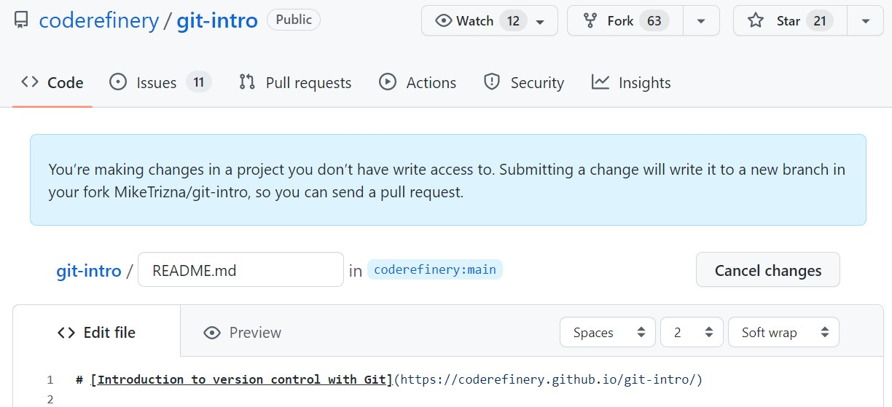
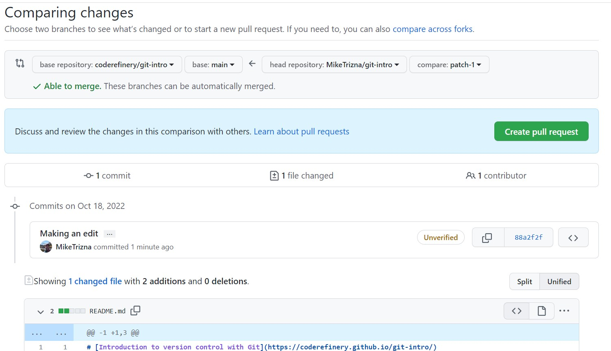

GitHub Issues and Pull Requests
Contents
GitHub Issues and Pull Requests#
In this session we will learn how to contribute to repositories through the GitHub Issues feature, and then how to suggest changes to a public repository by proposing a Pull Request.
Through both of these processes, we will see how GitHub allows for social media-like discussions that then become part of your repository’s record.
Step 1: File an issue on your own repository#
Back on your recipe repository from the previous lesson, click on the Issues tab (next to Code).
On your own repositories, Issues are good places to keep track of ideas that you intend to implement in the future.
Click the green “New issue” button to create a new issue.

Add a title and description of an idea that you think would make your recipe repository better.
Notice that you can assign issues to specific people (when you are working with a team), and that you can categorize them with labels and milestones.
Step 2: File an issue on a colleague’s repository#
More commonly, GitHub issues are used for users of a software or documentation site to point out bugs or make feature requests.
Exercise
In the workshop EtherPad, write your name, and add a link to your GitHub repository.
Once all participants have added their repository link, go to the repository of the person above you, and add a bug report or feature request as a new Issue.
If someone else has filed an issue in your repository, how were you alerted?
Go find that issue that was filed in your repository, and respond to it.
Step 3: Make a pull request#
As you can see, it is very easy for strangers on the Internet to suggest new features in open source software. However, the developers do not always have the bandwidth or ability to make the changes that you request. To be a good open source software citizen, you can make those changes yourself, and contribute them back to the project.
On the same repository you are in from the previous exercise (or in the instructor’s repository), navigate to either the README.md or guacamole.md files, and click on the pencil icon as if you were going to edit it.
What is different about this new screen than when you edited a file in your own repository?
{kind=link}
At the bottom, instead of “Commit changes”, there is a button for “Propose changes”.

When you click on “Propose changes”, you should see a complicated page called “Compare Changes” that shows which files have changed and where.
{kind=link}
To actually make this suggested change, click on the green “Create Pull Request” button.
Don’t worry – this is only a request. Your colleague will still have an opportunity to accept or reject your changes – or start another discussion on the merits of your suggestion.
Now go back to your own repository, and see if a Pull Request has come in from someone else in the class. Feel free to respond politely to this request in whatever way you feel is appropriate.